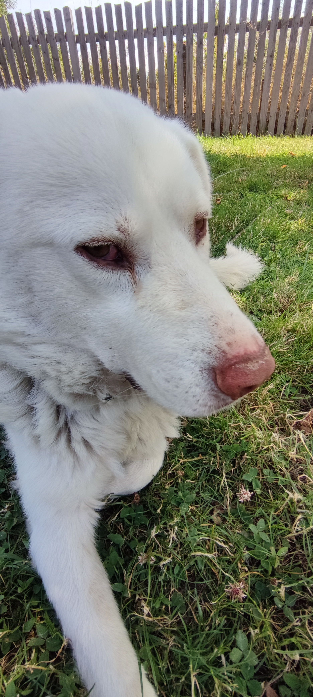
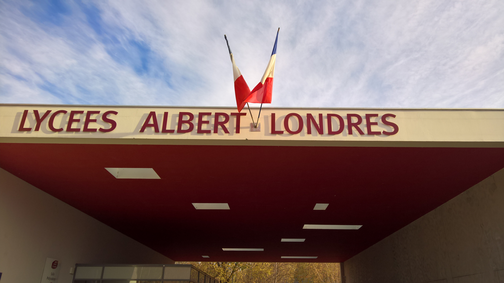

2025 – 2026
Première année BTS SIO Option SISR
Lycée Albert Londres
Introduction aux sciences réseau, cybersécurité et programmation puis Approfondissement de l'apprentissage des réseaux et cybersécurité.
BTS SIO - Option SISR
Bienvenu(e) sur mon portfolio.
Je me présente, je suis Bastien DE MACEDO, 18 ans et actuellement étudiant en BTS SIO option SISR au lycée général et technologique Albert Londres, je suis passionné par l'informatique et plus particulièrement sa dimension matérielle encourageant au bricolage/bidouillage mais également le côté historique de la chose ainsi que les dernières technologies. Je possède également une affinité pour l'automobile et les animaux.


Lycée Albert Londres
Introduction aux sciences réseau, cybersécurité et programmation puis Approfondissement de l'apprentissage des réseaux et cybersécurité.
Lycée Albert Londres
Suite de la formation STMG sans changement majeur à l'exception de la spécialité Systèmes d'information et de gestion (SIG) qui m'a permis de mettre un pied dans l'informatique en entreprise (organisation, numérisation, mise en conformité, CNIL, RGPD, analyse décisionnelle...)
Lycée Albert Londres
Cette formation m'a permis de découvrir les sciences économiques, légales, managériales et de gestion ce qui malgré la déconnexion avec l'informatique, m'a également permis de me familiariser avec des concepts cruciaux du monde du travail.

Le Lycée Albert Londres, situé à Cusset dans l’Allier, est un établissement public reconnu pour la diversité et la qualité de ses formations, allant de la voie générale et technologique ou professionelle à l’enseignement supérieur.
Il propose notamment le BTS Services Informatiques aux Organisations (SIO), formation professionnalisante orientée vers les métiers de l’informatique.
Site web du lycée Albert Londres

Le BTS Services Informatiques aux Organisations (SIO) est un diplôme national de niveau Bac +2 qui forme des professionnels capables de répondre aux besoins informatiques des entreprises et des organisations publiques.
Cette formation professionnalisante prépare les étudiants à concevoir, déployer, maintenir et sécuriser des solutions informatiques adaptées aux besoins des utilisateurs. contrairement à d'autres formations, le BTS SIO introduit ses étudiants à la science des réseaux et la programmation de manière égale durant le premier trimestre, leur permettant donc de se faire une opinion sur ces sujets tandis que la cybersécurité est présente cette fois dans les deux sujets mais implémenté de façon adaptée à chacune.
Le BTS SIO du lycée Albert Londres présente également quelques particularités :
Vous pouvez imaginer que des connaissances acquises en autodidactie sur le matériel informatique ne suffissent pas à la création d'une carrière. Par conséquent, le BTS SIO représentait pour moi l'opportunité d'étendre connaissances/compétences ainsi que de sortir de ma zone de confort en découvrant les sciences réseaux, de la cybersécurité et la programmation.
Entreprise : ...
Missions affectées :
Conclusion :
Entreprise : ...
Missions affectées :
Conclusion :
A déterminer...
Email : BDM.workpro@gmail.com
Téléphone : 07 83 29 96 91